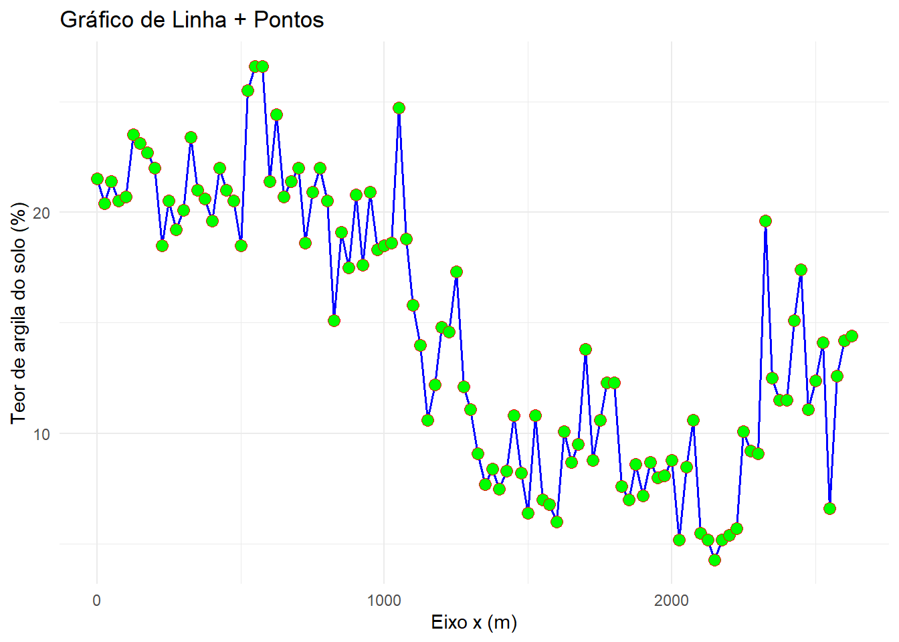
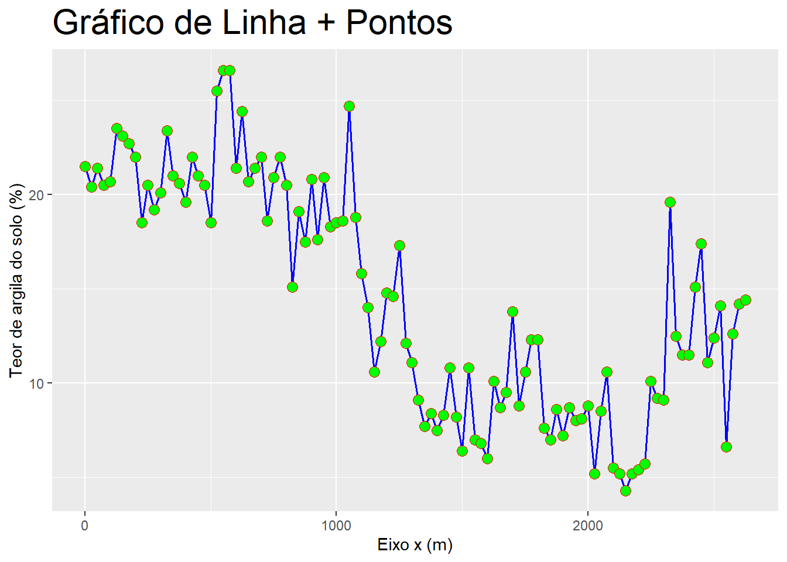
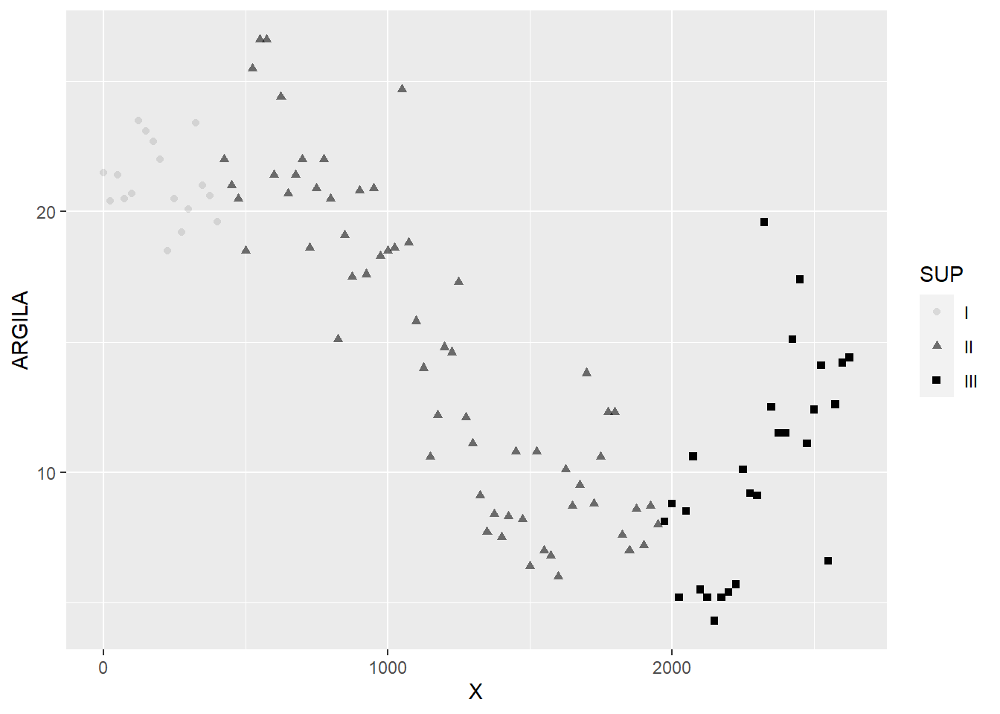
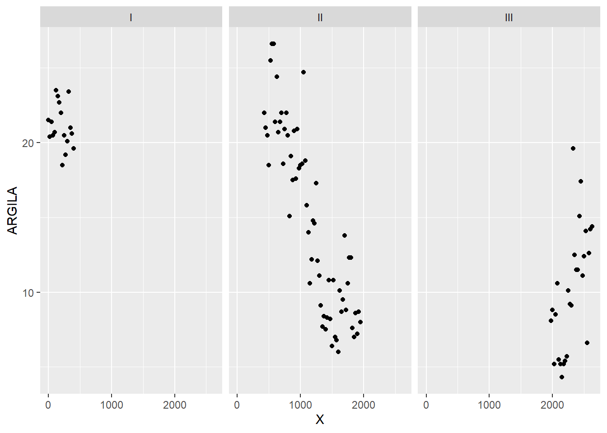
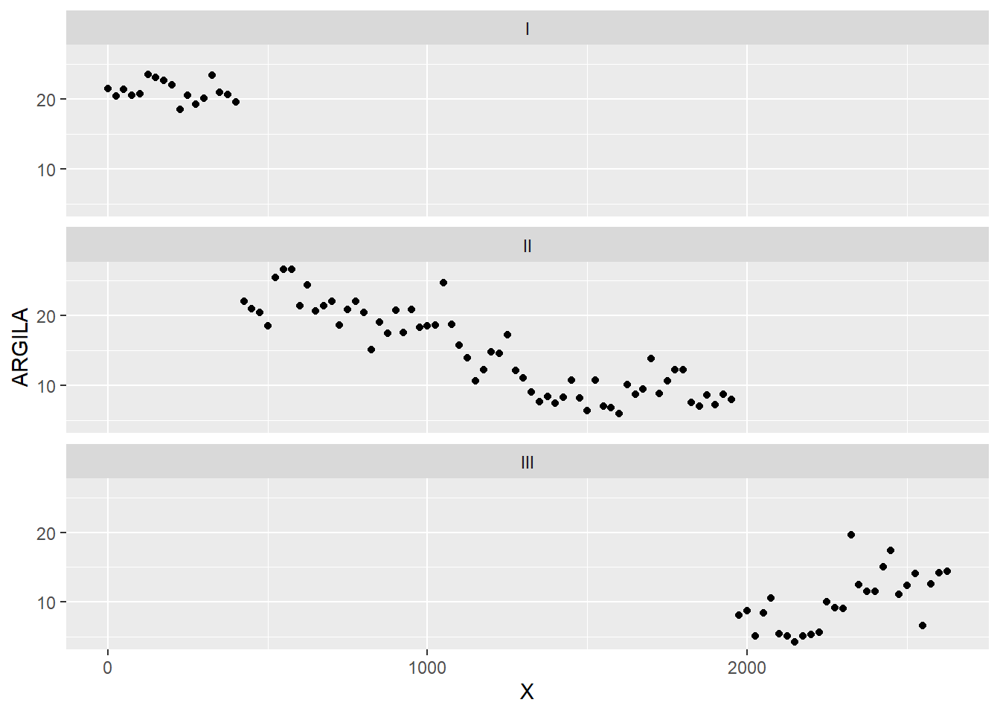
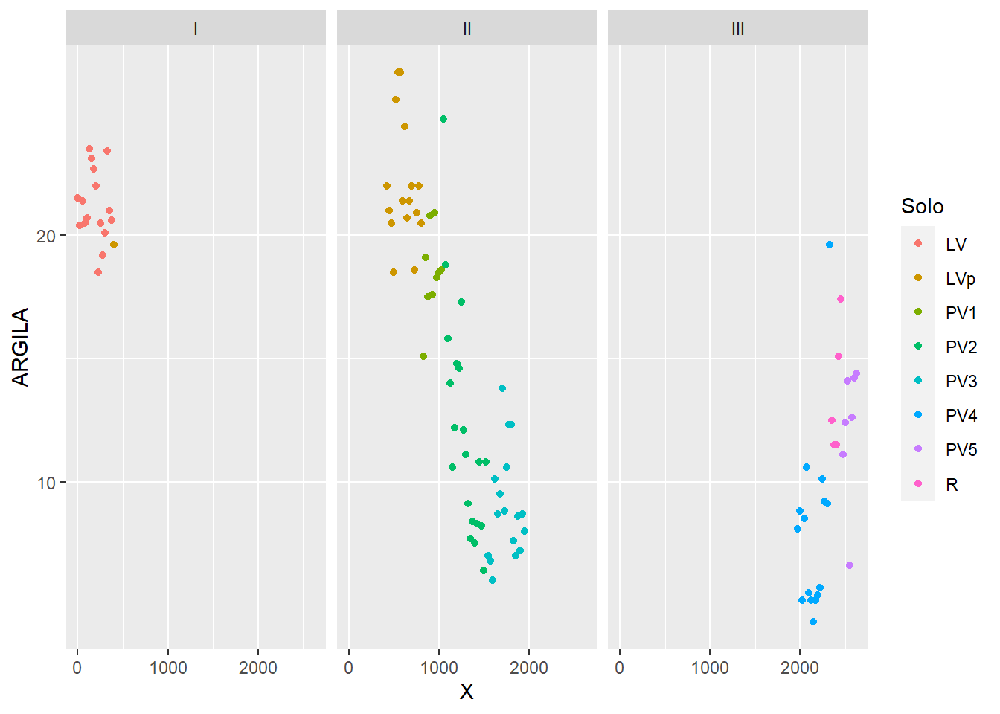
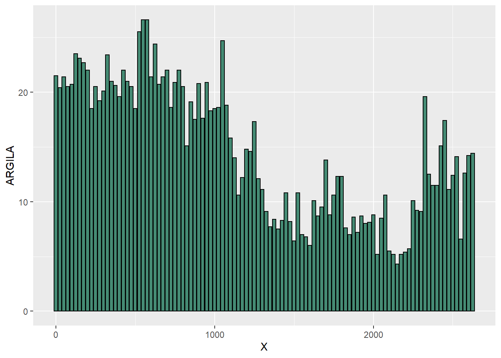

8 Visualização de dados com o ggplot2
O R possui vários sistemas para fazer gráficos, mas o pacote ggplot2 é um dos mais elegantes e versáteis para realizar essa tarefa. O ggplot2 implementa a gramática dos gráficos, um sistema coerente para descrever e construir gráficos.
Vamos carregar o tidyverse, que tem o pacote ggplot2 como um de seus elementos centrais.
library(tidyverse)Importação dos dados
Vamos realizar a importação, via web, do banco de dados geomorfologia.txt.
URL <- "https://raw.githubusercontent.com/arpanosso/r_data_science_fcav/master/dados/geomorfologia.txt"
geomorfologia<-read.table(URL,
header = TRUE)
glimpse(geomorfologia)## Rows: 106
## Columns: 22
## $ SUP <chr> "I", "I", "I", "I", "I", "I", "I", "I", "I", "I", "I", "I", "I~
## $ Solo <chr> "LV", "LV", "LV", "LV", "LV", "LV", "LV", "LV", "LV", "LV", "L~
## $ Amostra <int> 1, 2, 3, 4, 5, 6, 7, 8, 9, 10, 11, 12, 13, 14, 15, 16, 17, 18,~
## $ X <int> 0, 25, 50, 75, 100, 125, 150, 175, 200, 225, 250, 275, 300, 32~
## $ AMG <dbl> 0.2, 0.1, 0.7, 0.4, 0.4, 0.4, 1.2, 0.8, 1.1, 1.2, 0.1, 0.2, 0.~
## $ AG <dbl> 3.72, 4.27, 5.00, 3.80, 3.10, 3.80, 3.60, 4.70, 4.50, 5.90, 5.~
## $ AM <dbl> 20.4, 22.6, 22.7, 23.7, 22.3, 23.8, 23.1, 25.8, 25.5, 32.8, 33~
## $ AF <dbl> 22.9, 23.6, 22.2, 24.4, 24.6, 19.1, 21.7, 21.1, 18.9, 19.8, 19~
## $ AMF <dbl> 30.0, 28.4, 26.9, 26.7, 26.9, 27.1, 26.5, 24.7, 25.4, 21.7, 19~
## $ SILTE <dbl> 1.2, 1.2, 1.2, 0.6, 2.1, 2.2, 0.7, 0.2, 2.5, 0.2, 2.5, 2.6, 0.~
## $ ARGILA <dbl> 21.5, 20.4, 21.4, 20.5, 20.7, 23.5, 23.1, 22.7, 22.0, 18.5, 20~
## $ S_A <dbl> 0.05, 0.05, 0.05, 0.02, 0.10, 0.09, 0.03, 0.01, 0.11, 0.01, 0.~
## $ AF_AG <dbl> 6.16, 5.53, 4.44, 6.42, 7.94, 5.03, 6.03, 4.49, 4.20, 3.36, 3.~
## $ P <dbl> 42, 22, 41, 27, 11, 12, 11, 16, 38, 25, 25, 6, 6, 7, 5, 4, 4, ~
## $ pH <dbl> 4.2, 3.8, 4.8, 4.0, 4.4, 4.0, 4.8, 5.4, 4.4, 5.2, 4.5, 5.1, 4.~
## $ K <dbl> 0.27, 0.11, 0.34, 0.13, 0.11, 0.14, 0.23, 0.28, 0.19, 0.14, 0.~
## $ Ca <dbl> 1.4, 0.4, 2.4, 0.7, 1.4, 0.6, 1.6, 3.3, 1.6, 2.9, 1.3, 1.6, 0.~
## $ Mg <dbl> 0.3, 0.1, 0.4, 0.1, 0.3, 0.1, 0.7, 1.3, 0.5, 1.7, 0.6, 0.8, 0.~
## $ H_Al <dbl> 5.2, 5.8, 4.2, 5.2, 4.2, 5.2, 3.4, 2.5, 5.2, 3.1, 4.2, 2.5, 4.~
## $ SB <dbl> 1.97, 0.61, 3.14, 0.93, 1.81, 0.84, 2.53, 4.88, 2.29, 4.74, 1.~
## $ T <dbl> 7.17, 6.41, 7.34, 6.13, 6.01, 6.04, 5.93, 7.38, 7.49, 7.84, 6.~
## $ V <dbl> 27, 10, 43, 15, 30, 14, 43, 66, 31, 60, 32, 50, 22, 35, 36, 34~8.1 Criando um gráfico
Vamos criar um gráfico do teor de argila do solo ao longo do transecto estudado.
Para isso utilizaremos dois operadores:
1) %>% - chamado PIPE do pacote dplyr o qual pode ser construído com o atalho Ctrl + Shift + M.
2) + - adição, para o controle das camadas gráficas e parâmetros específicos após aplicar a função ggplot().
REGRA: o PIPE sempre opera um DATA FRAME e tem como retorno um novo DATA FRAME e para a ggplot(), o primeiro argumento SEMPRE será um data frame.
A forma mais simples para iniciarmos a confecção do gráfico é construírmos cada etapa individual deste, estudando os códigos etapa por etapa. Portanto, mãos a obra.
No código abaixo, construiremos somente a tela de plotagem do gráfico.
geomorfologia %>%
ggplot()
Se a nossa inteção é visualizar as alterações dos teores de argila ao longo do transecto nas diferentes superfícies geomórficas, precisamos construir uma gráfico de dispersão (scatter) entre a posição X e o teor de argila do solo. Para isso vamos utilizar a função de estética aes(), dentro da função ggplot(), para definir quais as colunas do objeto geomorfologia serão utilizadas para criação do gráfico. Observe que os eixos agora são desenhados.
geomorfologia %>%
ggplot(aes(x=X, y =ARGILA))A geometria de pontos agora deve ser indicada, ou seja, vamos adicionar uma nova camada a esse gráfico. Sempre utilizaremos o operador de adição + para adicioar uma camada de pontos a esse gráfico geom_point().
geomorfologia %>%
ggplot( aes(x=X, y =ARGILA) ) +
geom_point()## Controlando geometrias
Outras geometrias poderiam ser utlizadas, ao invés de pontos, poderíamos pedir uma geometria de linha por exemplo:
geomorfologia %>%
ggplot( aes(x=X, y =ARGILA) ) +
geom_line()Ou poderíamos mesclar as duas geometrias:
geomorfologia %>%
ggplot( aes(x=X, y =ARGILA) ) +
geom_line()+
geom_point()
Agora, finalmente, podemos controlar algumas propriedades dentro de cada geometria.
geomorfologia %>%
ggplot( aes(x=X, y =ARGILA) ) +
geom_line(color="blue", # cor da linha
lwd= 0.7, # espessura da linha
linetype=2)+ # tipo de linha
geom_point(shape=21, # tipo do marcador 0-14 são ocas de 15-18 sólidas e de 21-24 possuem borda e preenchimento
fill="green", # cor do preenchimento do marcador
color="red", # cor da borda do marcador
size=3) # tamanho do marcadorOBS: A forma de um ponto (marcador) é controlada pelo argumento shape. Há algumas duplicadas aparentes nesse argumento, que recomendamos qua sejam testadas por exemplo, 0, 15 e 22 são quadrados. A diferença vem da interação das estéticas color e fill. As formas ocas são de 0 a 14 e a cor de sua borda é determinada por color, as formas sólidas são de 15 a 18 e a sua cor de preenchimento é definida por color, já as formas de 21 a 24 têm a cor de sua borda definida por color e a cor de seu preenchimento definida por fill. Veja os exemplos:
geomorfologia %>%
ggplot( aes(x=X, y =ARGILA) ) +
geom_line(color="red", lwd= 0.7, linetype=1) +
geom_point(shape=0, size=5, color = "blue") 
geomorfologia %>%
ggplot( aes(x=X, y =ARGILA) ) +
geom_line(color="red", lwd= 0.7, linetype=1) +
geom_point(shape=15, size=5, color = "blue") geomorfologia %>%
ggplot( aes(x=X, y =ARGILA) ) +
geom_line(color="red", lwd= 0.7, linetype=1) +
geom_point(shape=22, size=5, color = "blue", fill="green") Nosso próximo passo será controlar os títulos dos eixos a partir da função labs().
geomorfologia %>%
ggplot( aes(x=X, y =ARGILA) ) +
geom_line(col="blue", lwd= 0.7, lty=1)+
geom_point(shape=21, fill="green", col="red", size=3) +
labs(x="Eixo x (m)",y="Teor de argila do solo (%)", title = "Gráfico de Linha + Pontos")
8.2 Definindo temas
Podemos utilizar diferentes temas, para isso vamos guardar o gráfico anterior em um objeto denominado meu_plot.
meu_plot <- geomorfologia %>%
ggplot( aes(x=X, y =ARGILA) ) +
geom_line(col="blue", lwd= 0.7, lty=1)+
geom_point(shape=21, fill="green", col="red", size=3) +
labs(x="Eixo x (m)",y="Teor de argila do solo (%)", title = "Gráfico de Linha + Pontos")
meu_plot
Agora podemos aplicar um tema pré-definido ao gráfico a partir da família de função theme_. Compare os diferentes temas diponíveis.
meu_plot + theme_minimal()
meu_plot + theme_bw()meu_plot + theme_dark()# ...8.3 Controlando elementos do tema
Vários elementos do tema podem ser controlados a partir de funções específicas associadas à função theme().
A família de funções element_ especificam a exibição de como os componentes sem dados do gráfico são desenhados.
*element_blank: não desenha nada e não atribui espaço;
*element_rect: bordas e fundos;
*element_line: linhas;
*element_text: texto;
*rel() é usado para especificar os tamanhos relativos ao objeto original;
*margin() é usado para especificar as margens dos elementos.
Por exemplo, vamos duplicar o tamanho de fonte (rel(2)) do título do gráfico já criado meu_plot.
meu_plot + theme(plot.title = element_text(size=rel(2)))
Vamos modificar o alinhamento do e a cor do título do gráfico já criado meu_plot.
meu_plot + theme(plot.title = element_text(hjust = 0.5, color = "red"))Alterando a área de plotagem.
meu_plot + theme(panel.background = element_rect(fill="lightblue", color = "red", linetype = "dashed"))
Agora vamos fazer várias modificações, adicionando linhas de grade na área de plotagem, mudar as cores do texto dos eixos para vermelho, as cores dos títulos dos eixos para verde escuro e alterar a cor do retângulo de plotagem exterior para cinza.
meu_plot + theme(panel.grid.major = element_line(color="gray", linetype = "dashed"),
panel.grid.minor = element_line(color="gray", linetype = "dashed"),
axis.text = element_text(colour = "red"),
axis.title = element_text(colour = "darkgreen",size=rel(1.2)),
plot.background = element_rect(fill="gray"))
Maiores informações a respeito dos parâmetros de controle dos elementos dos gráficos podem ser encontrados em https://ggplot2.tidyverse.org/reference/theme.html.
8.4 Mapeamento estéticos
Vamos voltar ao gráfico de dispersão do teor de argila do solo ao longo do transecto estudado.
geomorfologia %>%
ggplot( aes(x=X, y =ARGILA) ) +
geom_point()
Podemos agora adicionar uma terceira variável a esse gráfico, como tipo de solo (Solo) ou a superfície geomórfica (SUP), e mapeá-la a partir de um estético (aesthetic). Esse estético é uma propriedade visual dos objetos no gráfico. Estéticos incluem coisas como tamanho, forma ou cor dos pontos.
Em nosso exemplo inicial Vamos mapear as cores dos pontos para cada superfície geomórfica (SUP).
Para mapear a estética cor à variável SUP, devemos associar o nome da estética ao nome da variável dentro de aes(). O ggplot2 atribuirá automaticamente uma cor singular para cada valor singular da variável, um processo conhecido como escalar (scaling). Automaticamente será adicionado uma legenda que explica quais níveis correspondem a quais valores.
geomorfologia %>%
ggplot( aes(x=X, y =ARGILA, col = SUP) ) +
geom_point()No exemplo anterior mapeamos SUP à estética cor, mas poderíamos ter mapeado SUP à estética de tamanho (size) da mesma maneira.
Neste caso, o tamanho exato de cada ponto revela a sua superfície. Entretanto, não recomendamos o mapeamento de uma variável por meio do tamanho.
geomorfologia %>%
ggplot( aes(x=X, y =ARGILA, size = SUP) ) +
geom_point()## Warning: Using size for a discrete variable is not advised.
Poderíamos ter mapeado SUP à estética alpha, que controla a transparência e à forma dos pontos controlada pelas estética shape.
geomorfologia %>%
ggplot( aes(x=X, y =ARGILA, alpha = SUP, shape=SUP) ) +
geom_point()
8.5 Facetas
As facetas são consideradas uma maneira prática de adicionar mais variáveis categóricas às representações gráficas.
Para criar facetas use a função facet_wrap(), cujo primeiro argumento deve ser uma fórmula (definida com ~ e o nome da variável categórica subsequente) e o segundo argumento é o número de linhas do painel gráfico.
Compare os painéis abaixo:
geomorfologia %>%
ggplot( aes(x=X, y =ARGILA) ) +
geom_point() +
facet_wrap(~SUP, nrow=1)
geomorfologia %>%
ggplot( aes(x=X, y =ARGILA) ) +
geom_point() +
facet_wrap(~SUP, nrow=3)
Outra importante e útil ferramenta é a função facet_grid que permite a incorporação de mais de uma variável na representação, no nosso exemplo, vamos adicionar o tipo de solo Solo. A fórmula conterá dois nomes de variáveis categóricas sepradas pelo ~
geomorfologia %>%
ggplot( aes(x=X, y =ARGILA) ) +
geom_point() +
facet_grid(SUP ~ Solo)Agora podemos mesclar as visualisações, utilizando o mapeamento estético e as facetas.
geomorfologia %>%
ggplot( aes(x=X, y =ARGILA, color=Solo) ) +
geom_point() +
facet_wrap(~SUP, nrow=1) ou,
ou,
geomorfologia %>%
ggplot( aes(x=X, y =ARGILA, color=SUP) ) +
geom_point() +
facet_wrap(~Solo, nrow=4) +
labs(x="Eixo x (m)", y= "Teor de argila (%)", color="Superfície")8.6 Objetos geométricos
8.6.1 Gráfico de Colunas
Um geom_ é o objeto geométrico que um gráfico usa para representar os dados. Gráficos de colunas, por exemplo, usam o geom_col(). O preenchimento e as cores das bordas das colunas são controlados pelos argumentos fill e color. Gráfico de coluas, linhas e pontos, plotam os valores brutos.
geomorfologia %>%
ggplot( aes(x=X, y =ARGILA) ) +
geom_col(color="black",fill="aquamarine4")
O gráfico de colunas também pode ser apresentadorotacionado em 90º a partir do uso da funçãocoord_flip().
geomorfologia %>%
ggplot( aes(x=X, y=ARGILA) ) +
geom_col(color="black",fill="aquamarine4") +
coord_flip()
8.6.2 Gráfico de Barras
Diferente do gráfico de colunas, o gráfico de barras possibilita a representação de dados categóricos, vamos supor que devemos contar o número de observações em cada superfície geomórfica. A função geom_bar() conta os pontos em cada categoria de SUP automaticamente.
geomorfologia %>%
ggplot( aes(x=SUP) ) +
geom_bar(color="black", fill="lightblue")Podemos mapear a superfície geomófica associando SUP à estética fill:
geomorfologia %>%
ggplot( aes(x=SUP, fill=SUP)) +
geom_bar(color="black") Se adicionarmos uma segunda variáveis categórica, como o tipo de solo
Se adicionarmos uma segunda variáveis categórica, como o tipo de solo Solo, as barras são automaticamente empilhadas, ondem cada retângulo colorido representa uma combinação de SUP e Solo.
geomorfologia %>%
ggplot( aes(x=SUP, fill=Solo)) +
geom_bar(color="black")
O empilhamento é realizado automaticamente, caso não queiramos o gráfico empilhado, utilizamos um dos três valores identity, dodge ou fill associados ao argumento position.
geomorfologia %>%
ggplot( aes(x=SUP, fill=Solo)) +
geom_bar(position = "fill", color="black")
geomorfologia %>%
ggplot( aes(x=SUP, fill=Solo)) +
geom_bar(position = "dodge", color="black")
8.6.3 Smoothers
Vamos ajustar uma linha suave aos dados de teor de argila ao longo do transecto X a partir da função geom_smooth().
geomorfologia %>%
ggplot( aes(x=X, y =ARGILA) ) +
geom_point() +
geom_smooth()Dentro de geom_smooth() podemos controlar o tipo da linha e a cor da linha a partir de linetype e color, respectivamente.
geomorfologia %>%
ggplot( aes(x=X, y =ARGILA) ) +
geom_point() +
geom_smooth(linetype=2, color="blue")Agora vamos aplicar uma linha suave para cada uma das superfícies geomórficas.
geomorfologia %>%
ggplot( aes(x=X, y =ARGILA, color=SUP) ) +
geom_point() +
geom_smooth()
Agora em diferentes facetas.
geomorfologia %>%
ggplot( aes(x=X, y =ARGILA, color=SUP) ) +
geom_point() +
geom_smooth() +
facet_wrap(~SUP, nrow=1)
Para apresentarmos as facetas em diferentes escalas (diferentes valores de X e Y em cada faceta), utilize o argumento scales = "free" em facet_wrap().
geomorfologia %>%
ggplot( aes(x=X, y =ARGILA, color=SUP) ) +
geom_point() +
geom_smooth() +
facet_wrap(~SUP, nrow=1, scales = "free")8.6.4 Boxplot
Conhecido como gráfico dos 5 números representa um resumos dos valores mínimo, primeiro quartil, mediana, terceiro quartil e máximo. Podem ser construídos para uma variável contínua a partir da geometria geom_boxplot(). Observe que dentro da função ggplot() não é necessário especificar o y, somente é atribuído a x a variável contínua ARGILA.
geomorfologia %>%
ggplot( aes(x=ARGILA) ) +
geom_boxplot()
O boxplot é uma caixa que vai do 25º percentil ao 75º percentil da distribuição, uma distância conhecida como a amplitude interquartil (IIQ). No meio da caixa há uma linha que exibe a mediana, isto é, 50º percentil, da distribuição. Essas três linhas lhe dão um sentido da dispersão da distribuição e se ela é ou não simétrica sobre a mediana ou enviesada para um lado.
Pontos visuais que exibem observações que caem mais do que 1,5 vez o IIQ de cada limite da caixa. Esses pontos foram da curva são incomuns, entãosão plotados individuaalmente.
Uma linha (ou bigode de gato, dai o nome Box and Whiskers) que se estende de cada lado da caixa e vai até o ponto mais distante da distribuição que não seja um outlier.
Podemos modificar a orientação do boxplot por meio de aes(y=ARGILA).
geomorfologia %>%
ggplot( aes(y=ARGILA) ) +
geom_boxplot() 
Outra possibilida é diminuir o tamanho da caixa com coord_cartesian().
geomorfologia %>%
ggplot( aes(y=ARGILA) ) +
geom_boxplot() +
coord_cartesian(xlim=c(-1,1))
Outra alternativa para exibir a distribuição de uma variável contínua é desmembrá-la por uma variável categórica no boxplot.
geomorfologia %>%
ggplot( aes(y=ARGILA, fill=Solo) ) +
geom_boxplot()8.6.5 Histograma
O gráfico histograma é facilmente construído a partir da função geom_histogram(). Semelhante ao geom_boxplot() dentro da função ggplot() é atribuído a x a variável contínua ARGILA.
geomorfologia %>%
ggplot(aes(x=ARGILA)) +
geom_histogram()
Observe que o histograma foi construído com a frequencia absoluta de cada classe, ou seja, o número de observações (contagem) dentro de cada classe de teor de argila construída automaticamentem pela função. Se ao invés da contagem, quiséssemos a densidade de frenquência, deveremos utilizar y=..density.. dentro de aes().
geomorfologia %>%
ggplot(aes(x=ARGILA, y=..density..)) +
geom_histogram()
Podemos estabelecer a amplitude dos intervalos em um histograma com o argumento bidwidth, que é medido nas unidades da variável x.
geomorfologia %>%
ggplot(aes(x=ARGILA, y=..density..)) +
geom_histogram(binwidth = 1)
Ou você pode especificar o número de classes a partir do argumento bins, que por default é igual a 30.
geomorfologia %>%
ggplot(aes(x=ARGILA, y=..density..)) +
geom_histogram(bins = 15)Vamos alterar as cores das bordas e do preeenchimento das colunas do histograma.
geomorfologia %>%
ggplot(aes(x=ARGILA, y=..density..)) +
geom_histogram(bins = 15, color="black",fill="white")Podemos associar a curva suave de densidade no hitograma, a partir da função geom_density() e controlar a transparência e seu preenchimento a partir dos argumentos alpha e fill, respectivamente.
geomorfologia %>%
ggplot(aes(x=ARGILA, y=..density..)) +
geom_histogram(bins = 15,color="black",fill="white")+
geom_density(alpha=.10, fill="red")Finalmente, podemos construir um histograma da variável ARGILA para cada superfície geomórfica.
geomorfologia %>%
ggplot(aes(x=ARGILA, y=..density.., color=SUP, fill=SUP)) +
geom_histogram(bins = 15, color="black",fill="white")+
geom_density(alpha=.2)+
facet_wrap(~SUP, scales="free")+
labs(x="Teor de argila do solo (%)", y = "Densidade", fill="Superfície", color="Superfície") +
theme_minimal()